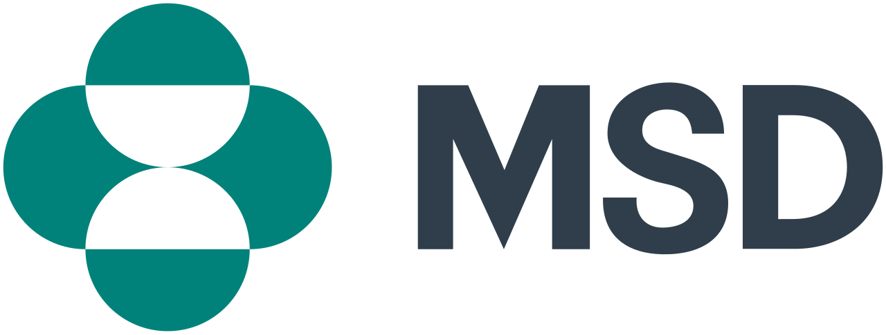
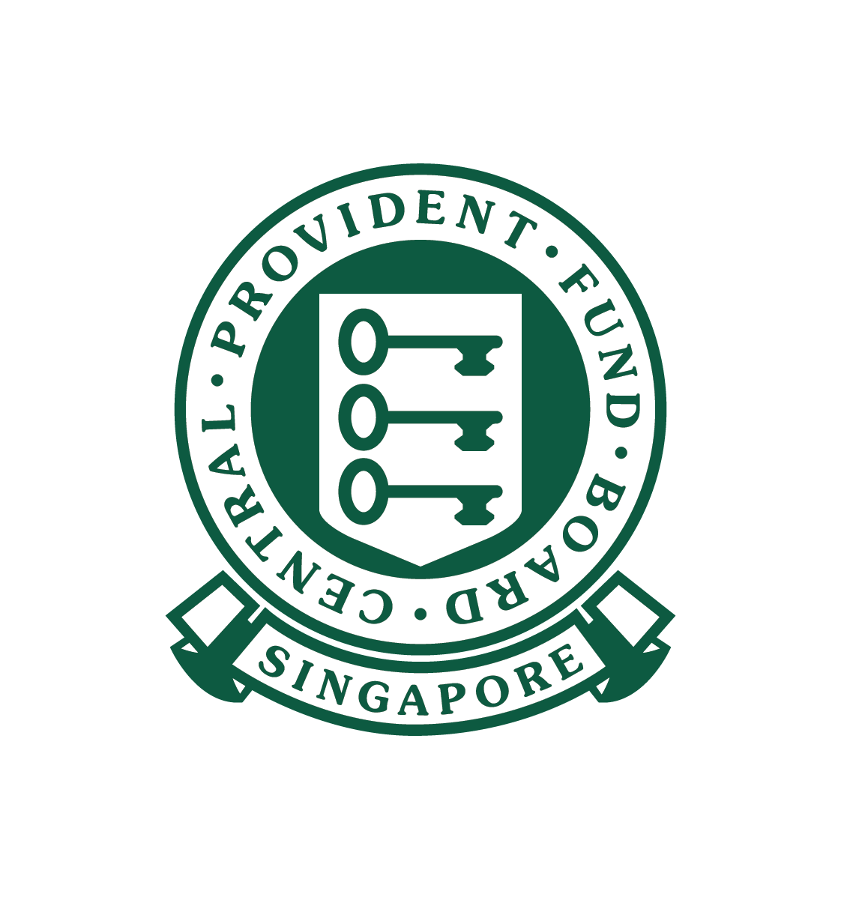

Professional Experience
Roles and environments that have shaped my practice
AI Ethics & Governance Specialist

Merck (MSD)
- Evaluating AI systems for fairness, transparency, and risk in regulated healthcare environments
- Supporting model documentation and governance workflows (e.g., model cards, audit trails)
- Collaborating with data science and product teams to ensure safe deployment of AI systems
- Translating technical model behaviour into stakeholder-facing insights
AI Product Design Intern

CPF – AI & Digital Infrastructure (AEO Team)
- Led usability evaluation across two internal AI platforms — structured testing (1–7 scale) measuring task clarity, ease of use, and confidence, with findings translated via affinity mapping into prioritised UX improvements
- Designed AI governance and content structuring frameworks defining how departments create, maintain, and validate knowledge sources for traceability and workflow integration
- Benchmarked internal systems against commercial AI tools to reduce cognitive load for government users and identify compliance-specific UX gaps
UX Designer
Thales
- Built real-time fleet monitoring dashboard for SCDF — translated operational requirements into a live decision-support interface refined through iterative usability testing
- Conducted qualitative research with 20+ immigration officers — synthesised workflows and pain points to inform redesign of clearance system interactions
- Facilitated 5 stakeholder workshops aligning cross-functional teams on design direction for an automated clearance visualisation tool
Responsible AI Lens
A set of principles I apply when designing and evaluating AI systems — drawing from a design background.
Fairness & Bias Awareness
I examine how datasets and system outputs may disadvantage certain user groups, and design interactions that surface or reduce bias.
Ensuring recommendations don't systematically exclude certain user behaviours or profiles in decision systems.
Explainability
I focus on making AI outputs understandable to non-technical users through clear reasoning, labels, and system transparency.
Translating model outputs into plain-language insights rather than exposing raw scores or probabilities.
Safety & Risk Thinking
I proactively identify failure cases where AI systems could mislead, overconfidently recommend, or behave unpredictably.
Adding safeguards when confidence is low or when data quality is uncertain.
Human Oversight
I design systems where humans remain the final decision-makers, especially in high-stakes or sensitive contexts.
Keeping AI in a "decision support" role instead of full automation.